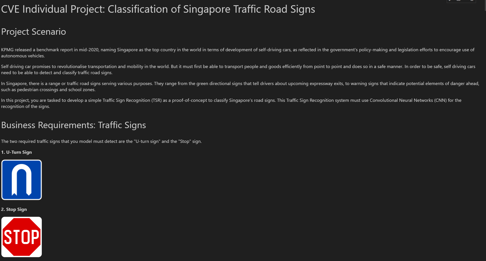
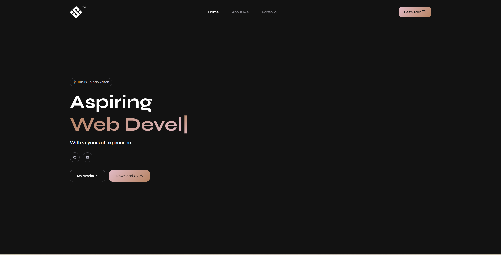

Computer Vision
Project done on creating an AI model to detect U-turn Signs and Stop Signs. Link in Github.
Natural Language Processing
Project done on creating an AI model to detect the sentiment of movie reviews to identify if they are positive or negative. Link in Github.
3D Modelling
Created a 3D model of a X-Wing from Star Wars.
Chatbot
Worked with a company called SCL Systems Pte Ltd to create a sales chatbot for them to answer questions about their products. Link in Github.

Web Development
Created a website for my works using HTML, CSS and Javascript.
3D Model with Animated Background
3D created Drone with an animated background.